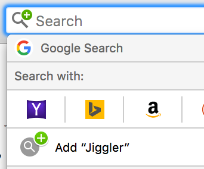
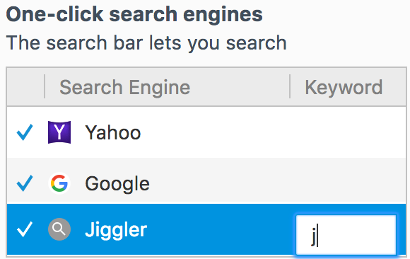

Jiggler Short Links Setup
Jiggler lets you share short links with other people in the company.
Chrome
Install the Jiggler extension.
Firefox
-
Click on the plus in the search box and choose "Add Jiggler".

- Click on the plus in the search box and choose "Change Search Settings".
-
Double-click to the right of Jiggler under the "Keyword" column. Put a "j" there.

- Now you can type (for example) "j link" in the address bar to go to that link.